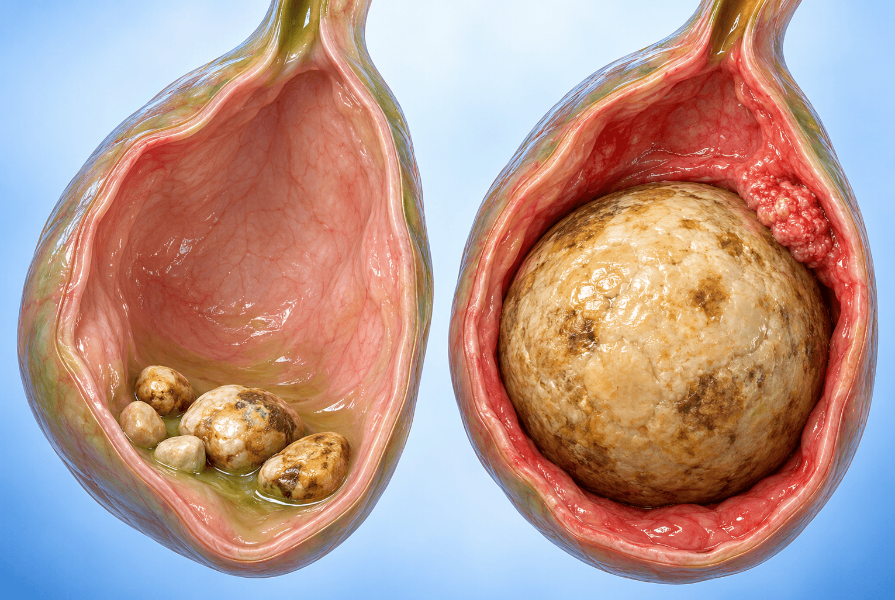

Mirizzi syndrome · 담낭장관 누공 · Bouveret syndrome · 담석성 장폐색 그리고 무증상 담석의 수술 적응증
CHAPTER 01 · 자연경과
담석의 75~80%는 무증상으로 지낸다
무증상 담석도 가만히 있지 않으며, 증상이 생기면 재발이 잦다
75–80%
담석이 생긴 사람 중 무증상(silent)으로 지내는 비율
20–25%
증상이 나타나는 비율
8–10%
증상이 있는 사람 중 급성 담낭염 등 합병증이 생기는 비율
무증상에서 증상으로
무증상 담석도 연 2~3%에서 증상(biliary colic)이 생긴다. 이 중 20~50%는 1년 안에 재발하며, 한 번 재발하면 주기적으로 빠르게 다시 재발하는 양상을 보인다.
급성 담낭염으로의 진행
급성 담낭염은 연 0.2%, biliary colic 환자 기준으로는 연 1~2%에서 생긴다. 급성 담낭염 환자의 30%는 1개월 안에 재발한다.
그 밖의 경과
일부는 만성 담낭염으로 가거나 담관결석(췌장염·담관염·황달)을 동반한다. 담낭암은 연 0.08%(50세 초과 기준)로 드물게 유발된다.
증상은 과식·기름진 음식 후 명치·RUQ 통증이 특징이며, 급성 담낭염에서는 발열·백혈구 증가, 담관결석이 있으면 황달이 동반된다.
아산 28회 연수강좌 — 무증상 담낭질환, 언제 수술할 것인가?(이우형)
02 / 23
CHAPTER 02 · 관리 원칙
무증상은 관찰, 증상이 있으면 담낭절제술
연자가 제시한 담석 관리 흐름과 급성 담낭염 중증도별 치료
담석 (GB stone)
무증상 (Silent)
증상 있음 (Symptomatic)
관찰 (No Tx)원칙적으로 치료 없이 경과를 본다
예외: 담낭절제술 권유큰 담석(>3 cm) · 용종 동반 · 담낭벽 석회화 · APBDU
소수의 작은 콜레스테롤 담석기능하는 담낭인 경우
담낭절제술
약물 용해
급성 담낭염 동반 시 (일본 임상 가이드라인)
Mild
조기 복강경 담낭절제술(early laparoscopic cholecystectomy)
Moderate
담낭 배액 또는 조기·선택적 복강경 담낭절제술
Severe
장기 지지(organ support)와 담낭 배액
증상이 있으면 전신 상태가 나쁜 아주 중증(severe) 경우를 제외하고 복강경 또는 로봇 담낭절제술이 원칙이다.
아산 28회 연수강좌 — 무증상 담낭질환, 언제 수술할 것인가?(이우형)
03 / 23
CHAPTER 03 · 3 cm 기준의 근거
3 cm 이상 담석에서 담낭암 위험이 약 10배
Diehl 등, JAMA 1983 — Gallstone Size and the Risk of Gallbladder Cancer
가장 큰 담석의 크기별 Odds ratio(OR)
<1 cm
1.0
암 8 · 대조 23
1.0–1.9 cm
0.6
암 5 · 대조 25
2.0–2.9 cm
2.4
암 10 · 대조 12
≥3 cm
10.1
암 14 · 대조 4
대조군은 양성 담낭질환 환자(benign GB controls). <1 cm 담석이 기준(OR 1.0)이다.
연구 설계
1983년 JAMA에 발표된 후향적 코호트 연구로, 미국 7개 병원에서 모은 자료이다. 담석 크기가 커질수록 담낭암 발생 가능성이 점차 늘었고 3 cm 이상에서 약 10배였다.
저자의 시사점과 연자의 평가
최초 보고였으므로 다른 연구에서 확인되면 무증상 담석 진료를 바꿀 필요가 있다고 했다. 연자는 표본에 Mexican-American이 많아(담낭암 호발 민족) 어느 정도 bias 가 있을 수 있다고 보았다.
Increased risk 10.1 (>3 cm vs <1 cm) — 연자는 이 근거로 3 cm 이상 담석에서 수술을 권유한다.
아산 28회 연수강좌 — 무증상 담낭질환, 언제 수술할 것인가?(이우형)
04 / 23
CHAPTER 03 · 후속 연구
크기는 여러 연구에서 확인되었다
담석의 보유 기간·개수·크기와 담낭암의 관계를 정리한 연자 제시 표
항목
보고된 결과 (Shrikhande 등, EJSO 2010 정리표)
연자의 설명
담석 보유 기간
20년 이상 OR 6.2~12.1, 24년 이상 OR 11.0 (Serra 2002, Zatonski 1992·1997)
아주 긴 기간이면 odds ratio가 높지만, 젊은 환자나 담석이 없는 경우에도 담낭암이 발견되어 논란이 있다.
담석 개수
Csendes 2000(592명), Roa 2006(사례 93·대조 186)에서 개수를 평가했다.
개수는 절제 후에 세는 것이고, 방사선 불투과성 담석이 아니면 술 전에 셀 수 없어 큰 의미는 없다.
담석 크기
Diehl 1983(227명): 2.0–2.9 cm OR 2.4, ≥3 cm OR 10.1 · Lowenfels 1989(1,676명): ≥3 cm RR 9.2 (2.3–37) · Csendes 2000: 개수와 무관하게 큰 담석 크기가 연관(P<0.01) · Moerman 1993: 크기 영향과 유의한 연관 없음
첫 연구 이후에도 여러 연구에서 크기는 확인되고 있다. 현재까지 3 cm 이상이면 위험비가 높아 수술을 권유한다.
연자는 담석 크기를 수술 권유의 기준으로 삼고, 기간과 개수는 임상 기준으로 쓰기 어렵다고 설명했다.
아산 28회 연수강좌 — 무증상 담낭질환, 언제 수술할 것인가?(이우형)
05 / 23
CHAPTER 04 · 병태생리
큰 담석은 어떻게 담낭암과 이어지는가
연자가 제시한 거대 담석(≥3 cm)과 담낭암의 병태생리적 연관성

그림 · 작은 담석이 든 정상 담낭(점막 자극이 적음)과 거대 담석(≥3 cm)이 점막에 반복 마찰을 주는 담낭의 대비
기전
설명
임상적 의미
1. 만성 기계적 자극
거대 담석의 반복적인 점막 마찰
지속적인 염증 유발
2. 만성 담낭염
장기간 지속되는 염증 상태
담낭벽 비후 및 전암성 변화 유도
3. 담즙 정체
담석으로 인한 담즙 유출 폐쇄
발암물질 농축 및 세균 증식 가속
4. 세균 감염
담즙 정체로 인한 세균 증식
만성 염증 가속 및 점막 손상
5. 진단 지연
초음파에서 강한 음영(acoustic shadowing)
암 초기 변화를 관찰하기 어려움
만성 기계적 자극 → 점막 손상·염증 → 전암성 병변(화생·이형성) → 담낭암. 3 cm 이상 거대 담석은 상대 위험도를 약 10배 높인다.
3담낭절제와 함께 십이지장 구부(duodenal bulb)에서 원위부 위(distal stomach)까지 절제했다
4PET에서 SUVmax가 올라 있어 악성 배제를 위해 frozen 검사를 본 뒤 위공장문합술(gastrojejunostomy)을 시행했다
담낭결장 누공 증례
1매우 큰 담석이 있고 담낭이 결장과 붙어 있어 박리가 필요했다
2담낭은 이미 천공되어 있었고 누공이 만들어지기 시작하는 시점에 수술했다
3다른 누공 경로가 있는지 따라가며 확인했고, 결장 절제는 필요 없어 primary repair를 시행했다
공통점 · 누공이 있으면 주변 장기와의 관계에 따라 절제 범위가 달라지고, 담낭암 가능성은 술 전 work-up과 frozen 검사로 배제한다.
누공의 위치(십이지장·결장)에 따라 같은 큰 담석이라도 수술 범위가 달라진다.
아산 28회 연수강좌 — 무증상 담낭질환, 언제 수술할 것인가?(이우형)
16 / 23
CHAPTER 10 · 수술 적응증
무증상 담석에서 수술을 권하는 상황
연자의 결론 슬라이드 7가지와 'Etc'로 덧붙인 경우
큰 담석 (≥3 cm)
담낭암 위험 증가(OR 10.1)와 Mirizzi·누공 합병증 때문에 수술을 권유한다.
담석 + 담낭 용종
결론 슬라이드에는 용종이 1 cm를 넘는 담석 동반 경우로 제시되었다.
국소 석회화 담낭
전체적인 석회화보다 focal 하게 석회화된 담낭벽이 적응증이다.
이식 환자
이식 전 또는 이식 중에 담낭절제술을 함께 시행하기도 한다.
만성 용혈성 질환
sickle cell anemia, spherocytosis. 비장절제 때 동시에 담낭절제술을 한 경험을 소개했다.
담관결석 동반
증상은 없지만 CBD stone으로 치료받았던 경우이다.
비만수술(bariatric)
수술 후 2년 내 3.7%에서 증상이 생겨 담석이 있으면 수술 중 함께 절제한다.
APBDU · 담관 낭종
췌액 역류로 담낭암을 더 만든다는 근거가 있어 담낭절제술을 권유한다.
악성 의심·위험
악성이 의심되거나 위험이 있는 경우에도 수술이 필요하다.
큰 담석(≥3 cm)은 결론 슬라이드에서 무증상 담석증의 첫째 수술 적응증으로 제시되었다.
아산 28회 연수강좌 — 무증상 담낭질환, 언제 수술할 것인가?(이우형)
17 / 23
CHAPTER 10 · 함께 판단하는 상황
담석에 용종이나 석회화가 더해질 때
용종 크기 기준과 석회화 양상은 큰 담석의 수술 결정과 함께 고려된다
용종 크기별 기준 (유럽 학회 가이드라인, 2022년경)
≤5 mm
위험인자가 없으면 모니터링이 필요 없다
6–9 mm
위험인자가 있으면 담낭절제술. 없으면 6개월·1년·2년에 관찰하고 이상이 없으면 종료한다
≥10 mm
담낭절제술을 권유한다(adenoma가 많고 국소 암이 숨어 있을 수 있다)
6–9 mm의 위험인자: 60세 초과, primary sclerosing cholangitis, Asian origin, 무경성(sessile) 용종 또는 벽 두께 4 mm 초과. Growing lesion: 2년 안에 2 mm 넘게 커지거나 10 mm에 도달하면 수술 적응이다.
도자기 담낭(porcelain GB)
0.1–0.2%
시설 기반 유병률
25→6%
과거 보고 담낭암 비율 → 최고 품질 근거
과거 보고는 출판·선택·표본 bias가 있었다. 담낭암의 위험인자는 mass, 담석 없음, focal 석회화였다. CT·MRCP에서 broad·complete 석회화는 위험이 낮고 focal·incomplete 점막 석회화(벽 비후 동반 시 더)는 높다. 경과 관찰 연구와 가이드라인은 없어 의뢰를 권한다.
담석과 용종이 함께 있을 때의 명확한 기준은 없으나, 기존 가이드라인처럼 수술을 권유하고 있다고 연자는 설명했다.
아산 28회 연수강좌 — 무증상 담낭질환, 언제 수술할 것인가?(이우형)
18 / 23
CHAPTER 11 · 연자 Q&A 1/4
연자 Q&A (1) 수술 보류와 수술 방식
Q&A 모음집에 실린 연자의 답변이며, 표준 진료 지침이 아니다
큰(2.3 cm) 담석, 경한 담낭염 후 수술을 보류하면?
연자 Q&A
연수강좌 질의응답에서 연자는 biliary colic 이력이 있으면 1년 내 재발이 20~50%이고 급성 담낭염으로 가는 경우도 1~2%라고 답했다. 증상이 재발하지 않는 분도 절반 이상이므로 환자가 원하지 않으면 추적관찰이 가능하다고 했다.
복강경과 로봇 수술의 차이는?
연자 Q&A
연수강좌 질의응답에서 연자는 현재까지 어느 수술이 우월하다는 증거는 없다고 답했다. 로봇은 ICG로 담도를 조영해 담도 손상을 예방할 수 있는 장점이 있으나 수술비가 500~1000만원이어서 실비 보험이 있으면 추천한다고 했다.
수술 후 일상 복귀는?
연자 Q&A
연수강좌 질의응답에서 연자는 두 수술 간 복귀에 유의한 차이는 없다고 답했다. 보통 1박 2일 일정으로 수술·퇴원하며, 사무직은 3~4일 쉬면 직장 복귀가 가능하다고 했다.
이 슬라이드의 내용은 모두 연수강좌 질의응답에서 연자가 답한 것이다.
아산 28회 연수강좌 — 무증상 담낭질환, 언제 수술할 것인가?(이우형)
19 / 23
CHAPTER 11 · 연자 Q&A 2/4
연자 Q&A (2) 용해 요법·체중감량 주사·호르몬
Q&A 모음집에 실린 연자의 답변이며, 표준 진료 지침이 아니다
무증상 담석의 경구 용해 요법은?
연자 Q&A
연자는 무증상 담석에서 치료를 권유하지 않는 것이 보통이며 개인적으로 시행하지 않는다고 답했다. 다만 국내 다기관에서 UDCA/CDCA 복합제 6개월 투여 시 용해가 있었다는 문헌이 있어, 환자가 강력히 원하면 시도할 수 있고 6개월 이상 초음파로 추적하라고 했다.
GLP-1·GIP 주사 중 담석이 있다면?
연자 Q&A
연자는 GLP·GIP 호르몬 영향과 급속한 체중감소가 콜레스테롤 과포화를 일으킨다고 알려져 있다고 답했다. 증상이 없으면 주사를 지속해도 되며, 장기 금식보다 매끼 조금이라도 먹기를 권했다. 증상이 없으면 초음파 검진은 크게 의미가 없다고 했다.
에스트로겐(HRT)과 무증상 담석
연자 Q&A
연자는 호르몬치료가 담즙 과포화와 담석 형성 촉진과 연관이 있으나 무증상이 증상성으로 변하는지는 뚜렷한 증거가 없어, 갱년기 증상이 심하면 HRT 지속이 좋다고 답했다. biliary colic을 보이면 담낭절제술 후 HRT를 권했다.
이 슬라이드의 내용은 모두 연수강좌 질의응답에서 연자가 답한 것이다.
아산 28회 연수강좌 — 무증상 담낭질환, 언제 수술할 것인가?(이우형)
20 / 23
CHAPTER 11 · 연자 Q&A 3/4
연자 Q&A (3) 용종과 담석
Q&A 모음집에 실린 연자의 답변이며, 표준 진료 지침이 아니다
용종이 있을 때 추적·수술 기준과 담석과의 구별
연자 Q&A
연자는 용종이 6 mm 이상이면 1년 간격으로 추적하고 1 cm 이상이면 수술을 고려하라고 답했다. 용종과 담석이 함께 있다고 바로 수술하지는 않으며, 작은 용종과 담석이면 몇 년 추적도 가능하고 절제는 용종 크기와 담석 증상 여부로 결정한다고 했다. 용종과 담석이 구별되지 않으면 체위를 바꿔 보거나 도플러로 확인하며, 추가 검사가 필요하면 CT가 가장 좋다고 했다.
1.3 cm 용종, 위험인자 없고 3~4년 변화 없다면?
연자 Q&A
연자는 10 mm 이상이면 수술을 권하는 것이 일반적이나 이 경우에는 강권하기 어렵다고 답했다. 무경성·넓은 기저부, 인접 벽비후, 추적 중 빠른 성장, 증상 동반, 담낭벽 층 구조 소실, 혈류가 풍부한 병변 같은 위험인자가 있으면 수술을 권하고, 없으면 2년보다 1년 간격 추적을 유지하며 가능하면 CA19-9도 함께 추적하라고 했다.
이 슬라이드의 내용은 모두 연수강좌 질의응답에서 연자가 답한 것이다.
아산 28회 연수강좌 — 무증상 담낭질환, 언제 수술할 것인가?(이우형)
21 / 23
CHAPTER 11 · 연자 Q&A 4/4
연자 Q&A (4) 선근종증과 수술 후 간효소
Q&A 모음집에 실린 연자의 답변이며, 표준 진료 지침이 아니다
담낭선근종증(adenomyomatosis)은 언제 수술하나?
연자 Q&A
연자는 담낭선근종증에 대해 뚜렷한 가이드라인이 없다고 답했다. 다만 고령, 담석 동반, 기저부 벽의 불규칙이 동반되면 수술을 권유하는 것이 좋겠다고 했다.
담낭절제 후 GGT·ALT가 계속 높다면?
연자 Q&A
연자는 먼저 cystic duct stone이나 bile duct stone을 배제해야 한다고 답했다. enterohepatic circulation 변화로 간 지방 축적이 늘어난다는 보고가 있어, 초음파로 추적할 때 fatty liver를 자세히 보라고 했다.
이 슬라이드의 내용은 모두 연수강좌 질의응답에서 연자가 답한 것이다.
아산 28회 연수강좌 — 무증상 담낭질환, 언제 수술할 것인가?(이우형)
22 / 23
CHAPTER 12 · 핵심 복습
큰 담석은 크기와 합병증 때문에 수술을 고려한다
무증상 담낭질환, 언제 수술할 것인가? — 큰 담석 합병증 정리
큰 담석(≥3 cm)
담낭암 상대 위험도 약 10배(OR 10.1). Mirizzi syndrome·담낭장관 누공·Bouveret syndrome·담석성 장폐색의 원인이 된다.
합병증이 생기면 수술이 어렵다
해부 변형·섬유화·인접 장기 절제·숨은 악성종양 때문에 술 전 계획(Plan A, B, C…)과 frozen 검사가 필요하다.
무증상이어도 수술을 권하는 경우
큰 담석·용종 동반·국소 석회화·이식·용혈성 질환·담관결석 이력·악성 의심.
광교바른내과
소화기내과 · 일반내과 · 5대암 검진 평일 08:30~18:30 · 토 08:30~13:30 경기도 용인시 수지구 광교중앙로 298, 4층 402-404호 031-893-4560
강의 학습자료 다시 보기
연자의 결론: 3 cm 이상의 담석이 있으면 증상이 없어도 수술이 필요한 적응증에 해당한다.